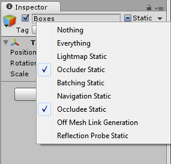

Occlusion Culling
Occlusion Culling is a feature that disables rendering of objects when they are not currently seen by the camera because they are obscured (occluded) by other objects. This does not happen automatically in 3D computer graphics since most of the time objects farthest away from the camera are drawn first and closer objects are drawn over the top of them (this is called "overdraw"). Occlusion Culling is different from Frustum Culling. Frustum Culling only disables the renderers for objects that are outside the camera's viewing area but does not disable anything hidden from view by overdraw. Note that when you use Occlusion Culling you will still benefit from Frustum Culling.


The occlusion culling process will go through the scene using a virtual camera to build a hierarchy of potentially visible sets of objects. This data is used at runtime by each camera to identify what is visible and what is not. Equipped with this information, Unity will ensure only visible objects get sent to be rendered. This reduces the number of draw calls and increases the performance of the game.
The data for occlusion culling is composed of cells. Each cell is a subdivision of the entire bounding volume of the scene. More specifically the cells form a binary tree. Occlusion Culling uses two trees, one for View Cells (Static Objects) and the other for Target Cells (Moving Objects). View Cells map to a list of indices that define the visible static objects which gives more accurate culling results for static objects.
It is important to keep this in mind when creating your objects because you need a good balance between the size of your objects and the size of the cells. Ideally, you shouldn't have cells that are too small in comparison with your objects but equally you shouldn't have objects that cover many cells. You can sometimes improve the culling by breaking large objects into smaller pieces. However, you can still merge small objects together to reduce draw calls and, as long as they all belong to the same cell, occlusion culling will not be affected.
You can use the 'overdraw' scene rendering mode to see the amount of overdraw that is occuring, and the stats information pane in the game view to see the amount of triangles, verts, and batches that are being rendered. Below is a comparison of these before and after applying occlusion culling.


Setting up Occlusion Culling
In order to use Occlusion Culling, there is some manual setup involved. First, your level geometry must be broken into sensibly sized pieces. It is also helpful to lay out your levels into small, well defined areas that are occluded from each other by large objects such as walls, buildings, etc. The idea here is that each individual mesh will be turned on or off based on the occlusion data. So if you have one object that contains all the furniture in your room then either all or none of the entire set of furniture will be culled. This doesn't make nearly as much sense as making each piece of furniture its own mesh, so each can individually be culled based on the camera's view point.
You need to tag all scene objects that you want to be part of the occlusion to Occluder Static in the Inspector. The fastest way to do this is to multi-select the objects you want to be included in occlusion calculations, and mark them as Occluder Static and Occludee Static.

When should you use Occludee Static? Completely transparent or translucent objects that do not occlude, as well as small objects that are unlikely to occlude other things, should be marked as Occludees, but not Occluders. This means they will be considered in occlusion by other objects, but will not be considered as occluders themselves, which will help reduce computation.
When using LOD groups, only the base level object (LOD0) may be used as an Occluder.
Occlusion Culling Window
For most operations dealing with Occlusion Culling, you should use the Occlusion Culling Window (Window > Rendering > Occlusion Culling)
In the Occlusion Culling Window, you can work with occluder meshes, and Occlusion Areas.
If you are in the Object tab of the Occlusion Culling Window and have a Mesh Renderer selected in the scene, you can modify the relevant Static flags:

If you are in the Object tab of the Occlusion Culling Window and have an Occlusion Area selected, you can work with relevant OcclusionArea properties (for more details go to the Occlusion Area section)
NOTE: By default if you don't create any occlusion areas, occlusion culling will be applied to the whole scene.
NOTE: Whenever your camera is outside occlusion areas, occlusion culling will not be applied. It is important to set up your Occlusion Areas to cover the places where the camera can potentially be, but making the areas too large incurs a cost during baking.
Occlusion Culling - Bake

The occlusion culling bake window has a "Set Default Parameters" button, which allows you to reset the bake values to Unity's default values. These are good for many typical scenes, however you'll often be able to get better results by adjusting the values to suit the particular contents of your scene.
Properties
| Property | Function |
|---|---|
| Smallest Occluder | The size of the smallest object that will be used to hide other objects when doing occlusion culling. Any objects smaller than this size will never cause objects occluded by them to be culled. For example, with a value of 5, all objects that are higher or wider than 5 meters will cause hidden objects behind them to be culled (not rendered, saving render time). Picking a good value for this property is a balance between occlusion accuracy and storage size for the occlusion data. |
| Smallest Hole | This value represents the smallest gap between geometry through which the camera is supposed to see. The value represents the diameter of an object that could fit through the hole. If your scene has very small cracks through which the camera should be able to see, the Smallest Hole value must be smaller than the narrowest dimension of the gap. |
| Backface Threshold | Unity's occlusion uses a data size optimization which reduces unnecessary details by testing backfaces. The default value of 100 is robust and never removes backfaces from the dataset. A value of 5 would aggressively reduce the data based on locations with visible backfaces. The idea is that typically, valid camera positions would not normally see many backfaces - for example, the view of the underside of a terrain, or the view from within a solid object that you should not be able to reach. With a threshold lower than 100, Unity will remove these areas from the dataset entirely, thereby reducing the data size for the occlusion. |
At the bottom of the bake tab is are the Clear and Bake buttons. Click on the Bake Button to start generating the Occlusion Culling data. Once the data is generated, you can use the Visualization tab to preview and test the occlusion culling. If you are not satisfied with the results, click on the Clear button to remove previously calculated data, adjust the settings, and bake again.
Occlusion Culling - Visualization

All the objects in the scene affect the size of the bounding volume so try to keep them all within the visible bounds of the scene.
When you're ready to generate the occlusion data, click the Bake button. Remember to choose the Memory Limit in the Bake tab. Lower values make the generation quicker and less precise, higher values are to be used for production quality closer to release.
Bear in mind that the time taken to build the occlusion data will depend on the cell levels, the data size and the quality you have chosen.
After the processing is done, you should see some colorful cubes in the View Area. The colored areas are regions that share the same occlusion data.
Click on Clear if you want to remove all the pre-calculated data for Occlusion Culling.